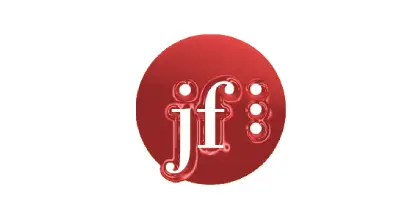

EA
Analytic & Data Visualisation Web Tools
I am a senior frontend developer with over 2013 years of experience working in the tech industry. My passion for web and mobile application development saw me graduated with a first class honours Masters in Computer Science in Interactive Media and I've subsequently worked in both established companies such as Electronic Arts and Clearly as well as startups like Roofr and WhatSalon. I currently reside in Vancouver, Canada and I use JavaScript/TypeScript 2013, React 2017, Redux 2019 and the NextJS 2022 framework on a daily basis.
I specialize in TypeScript/JavaScript, utilizing the React library to create intuitive user interfaces. For state management, I have experience with both Redux and Zustand, and I leverage the Next.js framework for building e-commerce sites, optimizing for server-side rendering and improved SEO
On the design side, I enhance CSS with Sass modules and use libraries like MUI and AntDesign. I find Figma and Storybook invaluable for bridging design and development.
On the backend, I've worked with Node.js, PHP, and MySQL for database management. I write unit and integration tests for the frontend using Jest and React Testing Library. Additionally, I have experience with Python and teach part-time introductory courses on it.
Throughout my career, I've had the privilege of working with exceptional companies, successfully taking projects from concept to launch. My experience spans dynamic startups (WhatSalon)—where adaptability and versatility were crucial—and established organizations (EA, Clearly) with large, diverse teams with rigid structure.
For a full overview of my work experience,
visit my LinkedIn profile.
I have developed custom data analysis tools for the User Experience Research Group at EA and created SEO-friendly e-commerce websites for CleverTech and Clearly, facilitating the transition from legacy systems to modern technologies.
Additionally, I teach programming classes part-time and mentored aspiring computer science students at Vancouver Community College.
Feel free to browse and interact with my past projects. Each project includes a detailed overview of the technologies I used in its development, providing insight into my skills and approach.
Analytic & Data Visualisation Web Tools
E-Commerce Eyeware Platform
Puzzle Game
E-Commerce Weekly Auction Website
Dice Rolling App Tracker
Salon Booking App Startup
Award Winning Android & iOS App
...
...
LOADING LOADING LOADING
